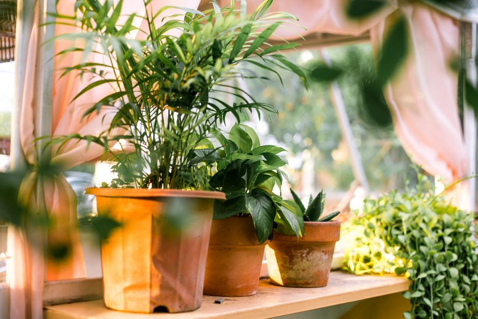
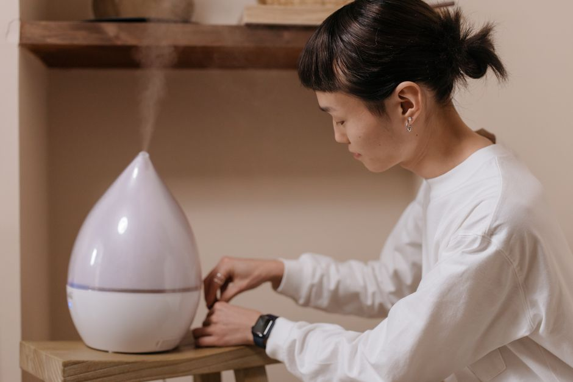
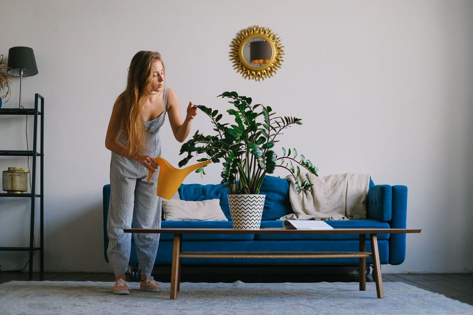

Comment maintenir l'humidité naturelle pour vos plantes d'intérieur en hiver

Photo: Vietnam Tri Duong Photographer / Pexels
En hiver, la baisse des températures et l'humidité ambiante peuvent poser des problèmes pour vos plantes d'intérieur. Heureusement, quelques astuces peuvent aider à maintenir l'humidité naturelle et favoriser la santé de vos végétaux. Voici comment optimiser l'humidité pour vos plantes en période froide.
L'importance de l'humidité pour vos plantes d'intérieur
L'humidité ambiante n'est pas seulement agréable pour vous, mais aussi essentielle pour vos plantes. L'absence d'humidité peut causer la dessèchement des feuilles et des tiges, ce qui peut entraîner une diminution de la photosynthèse et une perte de vitalité. Par exemple, une Sansevieria, qui est adaptée à des environnements sec, peut présenter des signes de stress en hiver si l'humidité ambiante ne reste pas à un niveau suffisant.
Conseil n°1 : Utilisez un humidificateur

Photo: cottonbro studio / Pexels
Un humidificateur est un outil efficace pour augmenter l'humidité ambiante. Il est recommandé de maintenir une humidité d'au moins 40-50% pour la plupart des plantes d'intérieur. Par exemple, une Ficus elastica, qui préfère une humidité d'air élevée, pourrait souffrir en hiver si elle n'est pas exposée à un environnement humide.
Conseil pratique : Placez un humidificateur dans la pièce où vous avez les plantes les plus sensibles, comme une Ficus elastica ou une Calathea. Un humidificateur à brumisation peut être utilisé pour une humidité ambiante plus directe.
Conseil n°2 : Créez un bassin d'humidité

Photo: SHVETS production / Pexels
Un autre moyen d'augmenter l'humidité ambiante est de créer un bassin d'humidité. Placer des pierres ou des galets dans un plat rempli d'eau et positionner vos plantes à quelques centimètres au-dessus de ce bassin peut augmenter l'humidité de l'air. C'est un bon compromis pour des plantes qui n'aiment pas trop de contact direct avec l'eau, comme une Chlorophytum.
Conseil pratique : Placez votre Chlorophytum à environ 10 cm au-dessus du bassin d'humidité pour éviter toute goutte d'eau sur les feuilles.
Conseil n°3 : Utilisez des bouteilles d'eau
Les bouteilles d'eau sont un excellent moyen d'ajouter de l'humidité directement à l'air autour de vos plantes. Versez de l'eau dans une bouteille de plastique, piquez-y une ou deux épingles à linge et placez-la près de la plante. L'eau devrait s'évaporer à un rythme régulier, augmentant ainsi l'humidité ambiante. C'est une méthode simple qui n'implique pas de matériel coûteux.
Conseil pratique : Placez une bouteille d'eau à environ 20 cm de chaque plant. Changez régulièrement l'eau pour éviter l'accumulation de bactéries et de parasites.
Conseil n°4 : Placez vos plantes proches de la source d'humidité
Si vous avez un plafond de douche ou une cuisine avec une source de vapeur, placez vos plantes dans cette zone. Par exemple, une Spathiphyllum, qui préfère une humidité ambiante moyenne, pourrait bénéficier d'un placement proche de la zone de cuisine où des vapeurs d'eau s'accumulent pendant la cuisson.
Conseil pratique : Placez votre Spathiphyllum à au moins 1 mètre de la source de vapeur pour éviter tout dégât d'eau.
Conclusion
En hiver, l'humidité ambiante peut poser des problèmes pour vos plantes d'intérieur. Néanmoins, avec quelques ajustements, vous pouvez maintenir un niveau d'humidité suffisant pour la plupart de vos plantes. Utilisez un humidificateur, créez un bassin d'humidité, utilisez des bouteilles d'eau, et placez vos plantes dans des zones propices à la rétention d'humidité. En suivant ces conseils, vous pouvez garantir une bonne santé à vos plantes tout au long de l'hiver.
Produits recommandés
En tant que Partenaire Amazon, je réalise un bénéfice sur les achats remplissant les conditions requises.